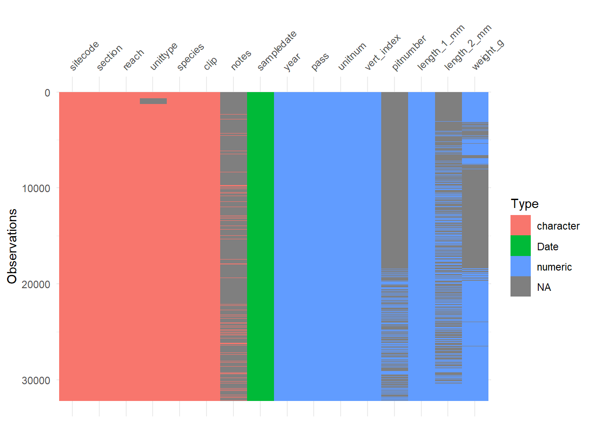

# Install LTER Data Sampler
#remotes::install_github("lter/lterdatasampler")
# Install necessary libraries
library(tidyverse)── Attaching core tidyverse packages ──────────────────────── tidyverse 2.0.0 ──
✔ dplyr 1.1.4 ✔ readr 2.1.5
✔ forcats 1.0.0 ✔ stringr 1.5.1
✔ ggplot2 3.5.1 ✔ tibble 3.2.1
✔ lubridate 1.9.4 ✔ tidyr 1.3.1
✔ purrr 1.0.2
── Conflicts ────────────────────────────────────────── tidyverse_conflicts() ──
✖ dplyr::filter() masks stats::filter()
✖ dplyr::lag() masks stats::lag()
ℹ Use the conflicted package (<http://conflicted.r-lib.org/>) to force all conflicts to become errorslibrary(ggpubr)Warning: package 'ggpubr' was built under R version 4.4.3library(lterdatasampler)
library(car)Warning: package 'car' was built under R version 4.4.3Loading required package: carDataWarning: package 'carData' was built under R version 4.4.3
Attaching package: 'car'
The following object is masked from 'package:dplyr':
recode
The following object is masked from 'package:purrr':
somelibrary(visdat)Warning: package 'visdat' was built under R version 4.4.3library(broom)
library(flextable)
Attaching package: 'flextable'
The following objects are masked from 'package:ggpubr':
border, font, rotate
The following object is masked from 'package:purrr':
compose# Retrieve the and_vertebrates data set
?and_vertebratesstarting httpd help server ... done# Explore data structure
str(and_vertebrates)tibble [32,209 × 16] (S3: tbl_df/tbl/data.frame)
$ year : num [1:32209] 1987 1987 1987 1987 1987 ...
$ sitecode : chr [1:32209] "MACKCC-L" "MACKCC-L" "MACKCC-L" "MACKCC-L" ...
$ section : chr [1:32209] "CC" "CC" "CC" "CC" ...
$ reach : chr [1:32209] "L" "L" "L" "L" ...
$ pass : num [1:32209] 1 1 1 1 1 1 1 1 1 1 ...
$ unitnum : num [1:32209] 1 1 1 1 1 1 1 1 1 1 ...
$ unittype : chr [1:32209] "R" "R" "R" "R" ...
$ vert_index : num [1:32209] 1 2 3 4 5 6 7 8 9 10 ...
$ pitnumber : num [1:32209] NA NA NA NA NA NA NA NA NA NA ...
$ species : chr [1:32209] "Cutthroat trout" "Cutthroat trout" "Cutthroat trout" "Cutthroat trout" ...
$ length_1_mm: num [1:32209] 58 61 89 58 93 86 107 131 103 117 ...
$ length_2_mm: num [1:32209] NA NA NA NA NA NA NA NA NA NA ...
$ weight_g : num [1:32209] 1.75 1.95 5.6 2.15 6.9 5.9 10.5 20.6 9.55 13 ...
$ clip : chr [1:32209] "NONE" "NONE" "NONE" "NONE" ...
$ sampledate : Date[1:32209], format: "1987-10-07" "1987-10-07" ...
$ notes : chr [1:32209] NA NA NA NA ...and_vertebrates %>%
glimpse() %>%
vis_dat()Rows: 32,209
Columns: 16
$ year <dbl> 1987, 1987, 1987, 1987, 1987, 1987, 1987, 1987, 1987, 1987…
$ sitecode <chr> "MACKCC-L", "MACKCC-L", "MACKCC-L", "MACKCC-L", "MACKCC-L"…
$ section <chr> "CC", "CC", "CC", "CC", "CC", "CC", "CC", "CC", "CC", "CC"…
$ reach <chr> "L", "L", "L", "L", "L", "L", "L", "L", "L", "L", "L", "L"…
$ pass <dbl> 1, 1, 1, 1, 1, 1, 1, 1, 1, 1, 1, 1, 1, 1, 1, 1, 1, 1, 1, 1…
$ unitnum <dbl> 1, 1, 1, 1, 1, 1, 1, 1, 1, 1, 1, 1, 1, 1, 1, 1, 2, 2, 2, 2…
$ unittype <chr> "R", "R", "R", "R", "R", "R", "R", "R", "R", "R", "R", "R"…
$ vert_index <dbl> 1, 2, 3, 4, 5, 6, 7, 8, 9, 10, 11, 12, 13, 14, 15, 16, 1, …
$ pitnumber <dbl> NA, NA, NA, NA, NA, NA, NA, NA, NA, NA, NA, NA, NA, NA, NA…
$ species <chr> "Cutthroat trout", "Cutthroat trout", "Cutthroat trout", "…
$ length_1_mm <dbl> 58, 61, 89, 58, 93, 86, 107, 131, 103, 117, 100, 127, 99, …
$ length_2_mm <dbl> NA, NA, NA, NA, NA, NA, NA, NA, NA, NA, NA, NA, NA, NA, NA…
$ weight_g <dbl> 1.75, 1.95, 5.60, 2.15, 6.90, 5.90, 10.50, 20.60, 9.55, 13…
$ clip <chr> "NONE", "NONE", "NONE", "NONE", "NONE", "NONE", "NONE", "N…
$ sampledate <date> 1987-10-07, 1987-10-07, 1987-10-07, 1987-10-07, 1987-10-0…
$ notes <chr> NA, NA, NA, NA, NA, NA, NA, NA, NA, NA, NA, NA, NA, NA, NA…